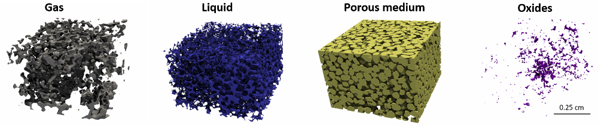
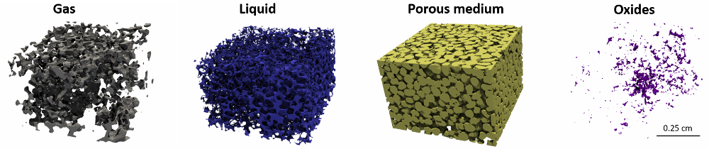

基于X射线μCT原位试验和FDEM方法研究颗粒材料微观力学行为


我们在μCT中对砂柱进行了原位剪切实验。我们识别出了共15961个单独的粒子，并追踪了它们的运动。我们使用了FDEM来复现这个实验，并在微观尺度上研究了颗粒的剪切行为。 (阅读原文)
I型断裂试验过程中进行声发射研究，对微裂纹和声发射的联系进行分析。
我们使用FDEM方法来模拟小行星撞击过程。
我们在μCT中对砂柱进行了原位剪切实验。我们识别出了共15961个单独的粒子，并追踪了它们的运动。我们使用了FDEM来复现这个实验，并在微观尺度上研究了颗粒的剪切行为。 (阅读原文)

用自主开发设计原位环形剪切仪(ERDμ-T)来研究岩石节理、断层的摩擦力学行为。这一技术可以在不扰动试验环境（例如：压强、温度、和试样位置）的条件下对试样的损伤机理进行观察。(阅读原文)

人工神经网络(ANN)和支持向量机(SVM)能够为在未知速度结构的介质中进行地震事件再定位提供有效而准确的方法。我们进行了室内断层滑动实验，记录了滑移过程中发生的声发射事件。这些事件的位置可以通过机器学习方法进行准确评估。(a)ANN模型结果。(b) SVM模型结果。图片显示了在实验后断层表面的照片上叠加的声发射分布。圆圈表示由机器学习模型计算出的声发射事件的位置。注意它们与白色粉末区域（擦痕）高度吻合。 (AGU 2019 Poster; 阅读原文)


我们进行了两次水力压裂(HF)数值模拟，试验，以研究油藏地质条件(包括层理面和离散裂隙网络(DFN))对HF模拟性能的影响。HF诱发的裂隙穿透层理平面，并通过DFN产生锯齿状裂缝。 (阅读原文)
通过室内实验方法，结合超声波断层扫描(UT)和数值模拟，我们研究了不同应力条件下岩石渐进破坏的特征。在单轴压缩条件下，我们对花岗岩板进行了二维时移UT观测，然后使用有限离散单元法(FDEM)对该测试进行数值复现。这套新型技术描述了宏观和微观尺度下的整体变形和破坏过程。 （阅读原文）

 
